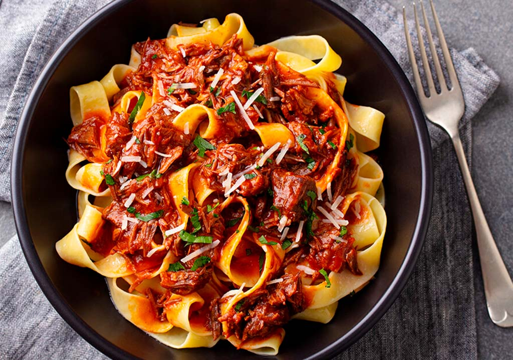
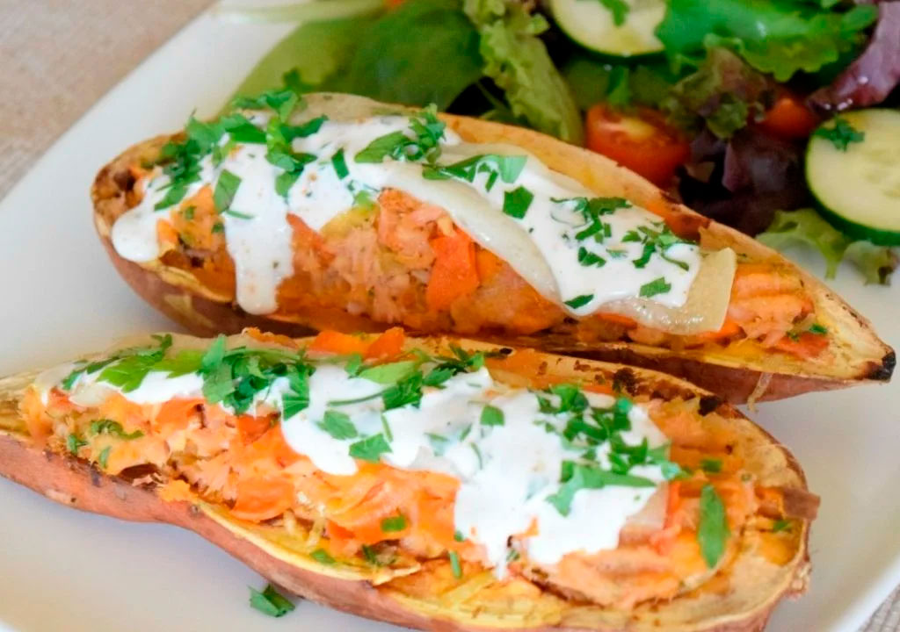
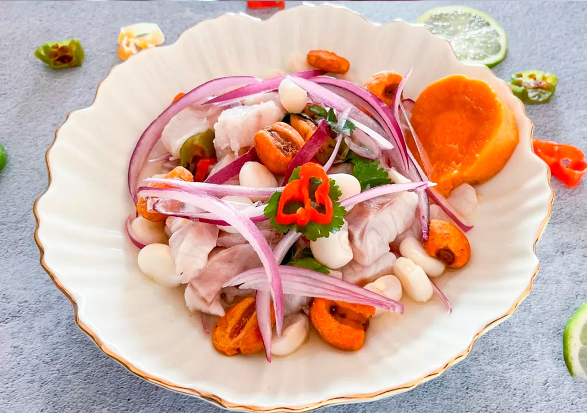
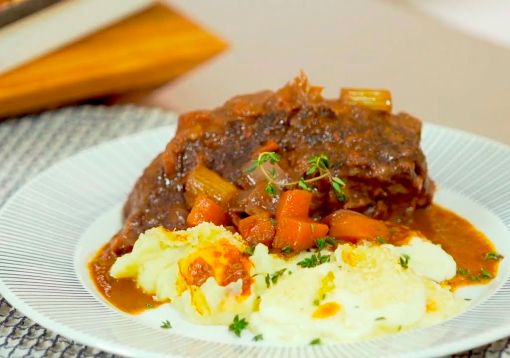
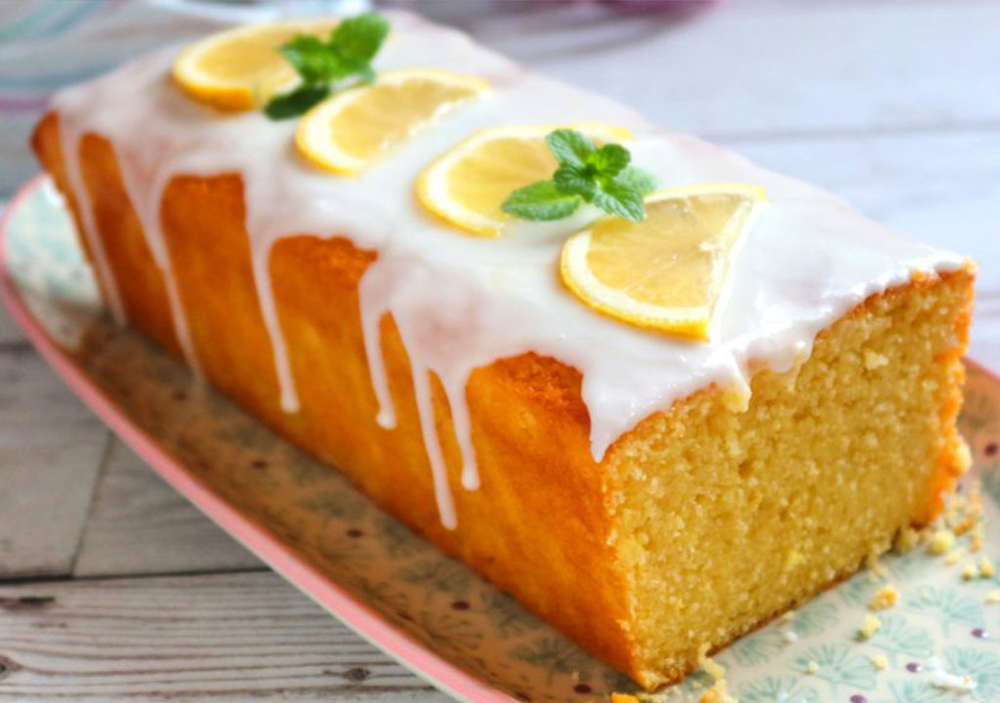
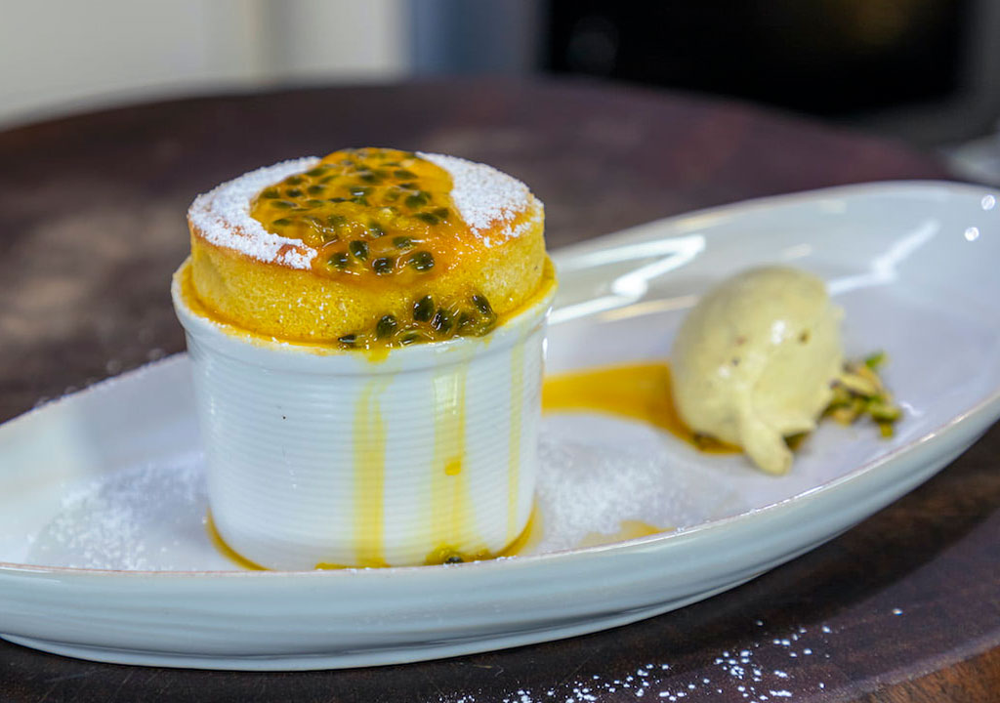
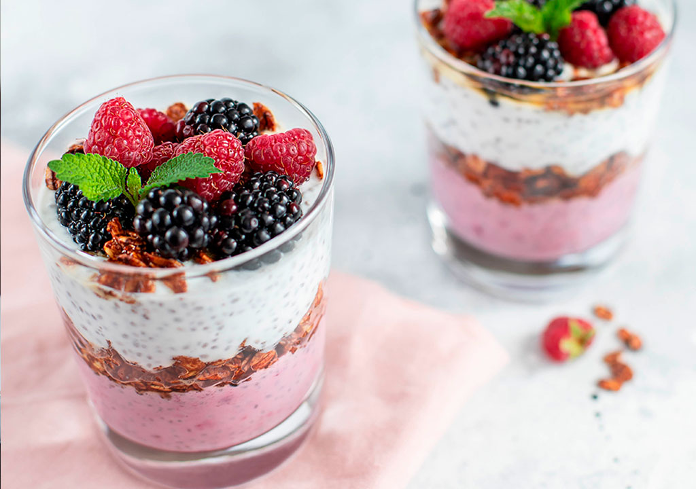
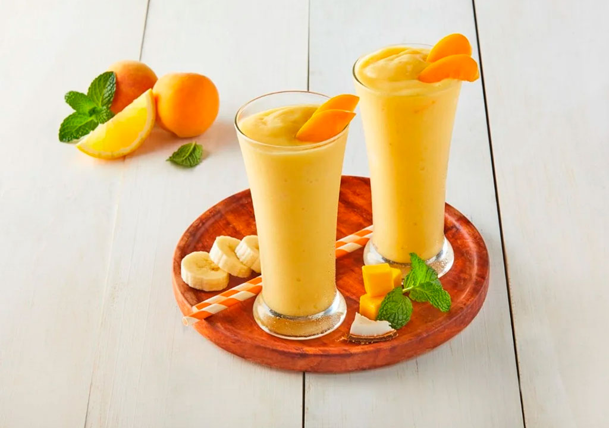

Pappardelle:
La Elegancia de la Pasta Italiana

Permíteme presentarte nuestro exquisito Pappardelle, una pasta italiana que te transportará a la Toscana con cada bocado. El Pappardelle es más que un simple plato; es una obra maestra de la gastronomía italiana. Nuestra pasta Pappardelle es larga, ancha y plana, perfecta para absorber salsas espesas y sustanciosas. Servimos nuestro Pappardelle en platos amplios y elegantes, donde las cintas anchas se entrelazan, creando una presentación visualmente impactante. En nuestro restaurante, el Pappardelle es más que un plato. Es un viaje a la Italia más auténtica.
$
Batatas Rellenas Marroquíes:
Un Festín de Sabores

En nuestro restaurante, las Batatas Rellenas Marroquíes se sirven en un plato de cerámica artesanal, acompañadas de un trozo de pan recién horneado. El aroma a especias llenará el aire mientras el cliente se prepara para sumergirse en esta experiencia culinaria única. Las batatas, tiernas y caramelizadas, se deshacen en la boca, y el contraste entre el dulzor y el picante es simplemente irresistible.
$
Ceviche de Lubina:
Frescura y Sabor en Cada Bocado

En nuestro restaurante, servimos el Ceviche de Lubina en un plato blanco, resaltando los colores vibrantes de los ingredientes. Las láminas de cebolla roja se entrelazan con los cubos de lubina, y el aroma del cilantro fresco te invita a probar cada bocado. Los patacones crujientes se sirven al lado, listos para acompañar este festín de sabores.
$
Roast Beef con Puré de Papas:
Un Homenaje a la Tradición Británica

En nuestro restaurante, servimos el Roast Beef con Puré de Papas en un plato de porcelana blanca. El roast beef se corta en rodajas generosas y se coloca sobre una cama de puré de papas. La salsa de carne se vierte con elegancia, y las verduras asadas se disponen alrededor del plato. El aroma a hierbas frescas y la textura suave del puré te invitarán a disfrutar cada bocado.
$
Bizcocho con Glaseado de Limón:

Para los amantes del clásico con un toque cítrico, presentamos nuestro Bizcocho con Glaseado de Limón. En un plato blanco, el bizcocho esponjoso se adorna con una capa brillante de glaseado de limón. Cada bocado es una explosión de sabor: dulzura equilibrada con la frescura del limón. Perfecto para acompañar un café o té. ¡Déjate tentar por esta delicia!
$
Soufflé de Mango y Coco

¿Listo para un viaje tropical? Nuestro Soufflé de Mango y Coco es una explosión de sabores exóticos. En un plato elegante, presentamos un soufflé dorado y esponjoso, con trozos jugosos de mango y un toque de coco rallado. El dulzor natural del mango se combina con la textura crujiente del coco. ¡Una delicia que te transportará a playas paradisíacas
$
Mousse de Frutas del Bosque

Sumérgete en la frescura de nuestro Mousse de Frutas del Bosque. En un elegante vasito, servimos una mousse suave y aireada, coronada con frutos rojos frescos. Cada cucharada es un viaje a los bosques silvestres, donde los sabores naturales se mezclan en armonía. Ideal para aquellos que buscan un postre ligero y lleno de autenticidad. ¡Disfruta de la naturaleza en cada bocado!
$
Smoothies de Frutas Exótica

Descubre la magia de las Bebidas de Frutas Exóticas. Cada sorbo es un viaje a tierras lejanas y sabores únicos. Nuestros mixólogos han creado combinaciones vibrantes que te transportarán a playas tropicales y mercados coloridos. Desde el primer trago, sentirás la frescura de la piña, la dulzura del mango y la exuberancia de la guanábana. ¡Sumérgete en la experiencia y déjate llevar por la naturaleza!
$
Mocktails sin alcohol

Nuestros Mocktails Creativos son la prueba de que la diversión no necesita ron ni vodka. Desde el Virgin Mojito con su frescura a base de menta y lima, hasta el intrigante Spritz sin Alcohol con su burbujeante Aperol sin vino. Cada sorbo es una celebración de la creatividad y el sabor. Así que, ¿por qué no brindar con algo diferente? ¡Salud!
$